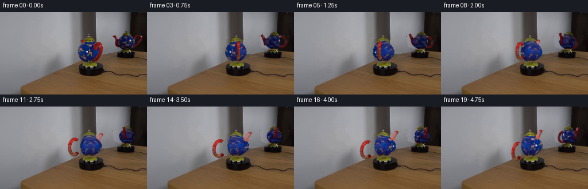
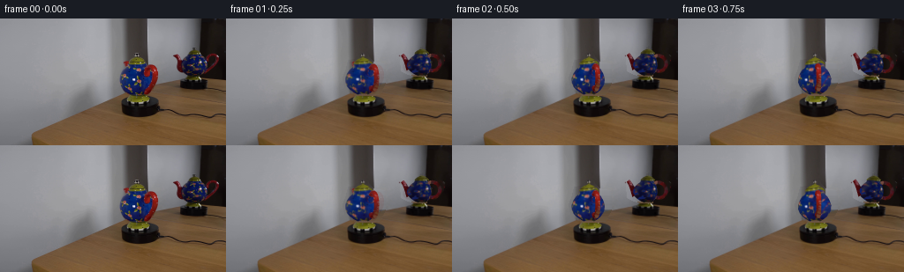

CODING AGENTS AS PIXEL WORLD MODELS
traex/GPT-6.1-Sol · 0121
点击播放 · 原生 RGB 像素
逐轮保存的候选
回放视频、检查图与代码变化。
每份候选均可单独播放。实际图片检查记录在下方工具轨迹中。
候选 01播放与检查图
点击播放 · 原生 RGB 像素


展开代码变化
--- 上一保存版本
+++ 本次保存版本
@@ -0,0 +1,252 @@
+from pathlib import Path
+import numpy as np
+from PIL import Image
+import cv2
+from scipy.ndimage import distance_transform_edt, gaussian_filter
+import artifact_io
+
+ROOT=Path(__file__).resolve().parent
+SOURCE=np.asarray(Image.open(ROOT/'first_frame.png').convert('RGB'))
+S=3
+H,W=144*S,256*S
+E=.235
+CE,SE=np.cos(E),np.sin(E)
+
+# A small, direct surface renderer. Coordinates are in units of source pixels.
+def rot(v,a):
+ c,s=np.cos(a),np.sin(a)
+ o=v.copy()
+ o[:,0]=c*v[:,0]+s*v[:,1]
+ o[:,1]=-s*v[:,0]+c*v[:,1]
+ return o
+
+def project(v,view,a):
+ p=rot(v,a)
+ cx,base,scale,_=view
+ out=np.column_stack((cx+scale*p[:,0],base+scale*(SE*p[:,1]-CE*p[:,2]),CE*p[:,1]+SE*p[:,2]))
+ return out
+
+def sample(x,y):
+ return cv2.remap(SOURCE.astype(np.float32),np.asarray(x,np.float32).reshape(1,-1),np.asarray(y,np.float32).reshape(1,-1),cv2.INTER_LINEAR,borderMode=cv2.BORDER_REFLECT_101).reshape(-1,3)
+
+MAIN=(155.2,86.7,1.,np.deg2rad(58))
+REF=(221.8,65.5,.735,np.deg2rad(20))
+
+
+def lathe(profile,view,part):
+ nz=100 if part=='body' else 45
+ nphi=160
+ zs=np.linspace(profile[0][0],profile[-1][0],nz)
+ rr=np.interp(zs,*np.asarray(profile).T)
+ phi=np.linspace(0,2*np.pi,nphi,endpoint=False)
+ z,ph=np.meshgrid(zs,phi,indexing='ij')
+ rad=np.tile(rr[:,None],(1,nphi))
+ shift=-4*np.sin(np.pi*z/35) if part=='body' else np.zeros_like(z)
+ v=np.stack((rad*np.cos(ph)+shift,rad*np.sin(ph),z),-1).reshape(-1,3)
+ slope=np.gradient(rr,zs)
+ n=np.stack((np.cos(ph),np.sin(ph),-np.tile(slope[:,None],(1,nphi))),-1).reshape(-1,3)
+ n/=np.linalg.norm(n,axis=1)[:,None]
+ rows=np.arange(nz-1)[:,None]*nphi
+ cols=np.arange(nphi)[None,:]
+ A=(rows+cols).ravel();B=(rows+(cols+1)%nphi).ravel();C=A+nphi;D=B+nphi
+ faces=np.concatenate([np.stack([A,B,C],1),np.stack([B,D,C],1)])
+ # Inverse photography: retain the measured ceramic grain and painted decoration.
+ initial=rot(v,view[3]);center=rot(np.stack((shift.reshape(-1),np.zeros(z.size),z.reshape(-1)),1),view[3])
+ initial[:,1]=center[:,1]-np.abs(initial[:,1]-center[:,1])
+ uv=np.column_stack((view[0]+view[2]*initial[:,0],view[1]+view[2]*(SE*initial[:,1]-CE*initial[:,2])))
+ color=sample(uv[:,0],uv[:,1])
+ if part=='body':
+ # Do not bake the red handle into the blue, rotationally continuous body.
+ bad=(color[:,0]>color[:,2]*1.35)&(color[:,0]>color[:,1]*1.8)&(uv[:,0]>view[0]+8*view[2])
+ cc=sample(2*view[0]-uv[:,0],uv[:,1])
+ color[bad]=cc[bad]
+ bad=(color[:,2]<color[:,0]*1.08)&(color[:,2]<45)&(v[:,2]>4)&(v[:,2]<32)
+ color[bad]=np.array([15,28,91])
+ elif part=='lid':
+ bad=(color[:,0]<color[:,2]*1.3)|(color[:,1]<color[:,2]*1.3)
+ color[bad]=np.array([92,91,24])
+ else:
+ color=np.minimum(color,150)
+ color=np.clip(color,35,165)
+ return (v,n,faces,color,part)
+
+
+def bezier(points,n=80):
+ p=np.asarray(points,float);t=np.linspace(0,1,n)[:,None]
+ return (1-t)**3*p[0]+3*(1-t)**2*t*p[1]+3*(1-t)*t*t*p[2]+t**3*p[3]
+
+def inverse_plane(path,view):
+ cx,base,sc,a=view
+ X=(path[:,0]-cx)/(sc*np.cos(a))
+ D=-np.sin(a)*X
+ Z=(base+sc*SE*D-path[:,1])/(sc*CE)
+ return np.column_stack((X,np.zeros(len(X)),Z))
+
+
+def tube(path,radii,view,part):
+ center=inverse_plane(path,view)
+ tang=np.gradient(center,axis=0);tang/=np.linalg.norm(tang,axis=1)[:,None]
+ nx=np.column_stack((tang[:,2],np.zeros(len(tang)),-tang[:,0]))
+ ny=np.tile([0.,1.,0.],(len(tang),1))
+ ang=np.linspace(0,2*np.pi,32,endpoint=False)
+ normal=nx[:,None,:]*np.cos(ang)[None,:,None]+ny[:,None,:]*np.sin(ang)[None,:,None]
+ v=(center[:,None,:]+radii[:,None,None]*normal).reshape(-1,3)
+ n=normal.reshape(-1,3)
+ N=32;r=np.arange(len(center)-1)[:,None]*N;c=np.arange(N)[None,:]
+ A=(r+c).ravel();B=(r+(c+1)%N).ravel();C=A+N;D=B+N
+ faces=np.concatenate([np.stack([A,B,C],1),np.stack([B,D,C],1)])
+ uv=project(v,view,view[3])
+ # Nearest measured red ceramic sample, excluding background and the blue body.
+ I=SOURCE.astype(float)
+ region=np.zeros((144,256),bool)
+ if view is MAIN:
+ if part=='handle': region[51:86,163:180]=True
+ else:region[47:64,137:150]=True
+ else:
+ if part=='handle':region[39:62,229:246]=True
+ else:region[40:62,198:211]=True
+ red=(I[:,:,0]>1.5*I[:,:,1])&(I[:,:,0]>1.35*I[:,:,2])&(I[:,:,0]>45)®ion
+ _,idx=distance_transform_edt(~red,return_indices=True)
+ xp=np.clip(np.round(uv[:,0]).astype(int),0,255);yp=np.clip(np.round(uv[:,1]).astype(int),0,143)
+ color=I[idx[0,yp,xp],idx[1,yp,xp]].copy()
+ return (v,n,faces,color,part)
+
+
+def make_meshes(view):
+ body=lathe([(0,5.5),(1,7),(3,10),(6,13.4),(10,16.6),(15,18.6),(20,18.8),(25,17.0),(29,14.6),(32,11.4),(35.5,10.4)],view,'body')
+ lid=lathe([(35.1,10.4),(35.6,11.1),(36.2,11.3),(37.3,10.6),(39.0,8.9),(41,6.2),(42.5,3.2),(43.0,1.3)],view,'lid')
+ knob=lathe([(42.8,1.1),(43.4,1.5),(44.2,1.1),(45.2,2.0),(46.8,2.25),(48.0,1.7),(48.3,.4)],view,'knob')
+ if view is MAIN:
+ p=bezier([(144.5,66),(149,57),(142.5,54),(142.0,49.7)],80)
+ rr=np.linspace(4.2,2.65,len(p))
+ th=np.linspace(np.deg2rad(-126),np.deg2rad(128),105)
+ hp=np.column_stack((170.6+5.1*np.cos(th),68.1+13.5*np.sin(th)))
+ hr=np.full(len(hp),2.9)
+ else:
+ p=bezier([(208.5,59),(206.5,54),(205,47),(200.9,42.1)],80)
+ rr=np.linspace(4.7,2.9,len(p))
+ th=np.linspace(np.deg2rad(-124),np.deg2rad(128),105)
+ hp=np.column_stack((233.5+7.9*np.cos(th),50.2+8.7*np.sin(th)))
+ hr=np.full(len(hp),2.1/view[2])
+ spout=tube(p,rr,view,'spout')
+ handle=tube(hp,hr,view,'handle')
+ return [body,lid,knob,spout,handle]
+
+
+def background():
+ # Clean-plate reconstruction of just the two foreground silhouettes.
+ im=SOURCE.astype(np.float32)
+ mask=np.zeros((144,256),np.uint8)
+ cv2.fillPoly(mask,[np.array([(152,38),(159,38),(161,43),(167,49),(178,51),(181,60),(180,74),(173,86),(166,87),(149,87),(140,84),(134,78),(132,67),(136,56),(138,47),(145,46),(149,42)])],255)
+ cv2.fillPoly(mask,[np.array([(215,32),(223,32),(230,37),(236,38),(244,39),(247,43),(246,51),(239,59),(231,65),(214,65),(205,63),(198,59),(197,45),(197,40),(204,38),(209,42),(211,36)])],255)
+ out=cv2.inpaint(SOURCE,mask,4,cv2.INPAINT_TELEA).astype(float)
+ # Re-establish the wall / mirror-jamb boundary beneath the moving pot.
+ for y in range(38,88):
+ for x in range(132,181):
+ if not mask[y,x]:continue
+ edge=126.8-.299*x
+ if y<edge:
+ upper=im[31,x]
+ if x<142:
+ val=upper+np.array([-.27,-.27,-.27])*(y-31)
+ elif x<167:
+ val=upper+np.array([.045,.025,.0])*(y-31)
+ else:
+ fac=float(im[min(y,82),184].mean()/im[31,184].mean())
+ val=upper*fac
+ out[y,x]=val
+ else:
+ # Tabletop illumination is slowly varying; retain measured wood grain.
+ yy=int(np.clip(y,0,143)); xx=min(195,x+46)
+ val=im[yy,xx].copy()
+ if val[0]<val[1]*1.1 or val[0]<70:
+ val=np.array([104,79,55])+max(0,y-88)*np.array([.24,.18,.12])
+ out[y,x]=val
+ for y in range(32,66):
+ for x in range(197,248):
+ if not mask[y,x]:continue
+ if x<228:
+ upper=im[29,x]
+ # The far reflected wall darkens gradually towards its right edge.
+ val=upper+np.array([-.35,-.35,-.35])*(y-29)
+ if y>110-.22*x:
+ val=np.array([107,83,62])
+ out[y,x]=val
+ else:
+ out[y,x]=im[29,x]*np.array([1.,1.,1.])
+ # Feather the reconstructed clean plate only at its boundary.
+ m=gaussian_filter(mask.astype(float)/255,.65)
+ # Keep the full removal within the painted silhouette.
+ m=np.maximum(m,mask/255.)
+ return np.clip(SOURCE*(1-m[:,:,None])+out*m[:,:,None],0,255).astype(np.uint8)
+
+
+def raster(meshes,view,a):
+ depth=np.full((H,W),1e8,np.float32)
+ image=np.zeros((H,W,3),np.float32)
+ coverage=np.zeros((H,W),np.uint8)
+ light=np.array([-.28,-.86,.43]); light/=np.linalg.norm(light)
+ for v,n,faces,col,part in meshes:
+ q=project(v,view,a);q[:,:2]=q[:,:2]*S-.5
+ normals=rot(n,a);n0=rot(n,view[3])
+ # Static measured illumination, with a restrained moving ceramic highlight.
+ original=.72+.28*np.maximum(n0@light,0)
+ now=.72+.28*np.maximum(normals@light,0)
+ shade=np.clip(now/original,.76,1.24)
+ color=col*shade[:,None]
+ # A tiny gloss term reflects the same stationary laboratory light.
+ eye=np.array([0,-CE,SE]);half=(light+eye);half/=np.linalg.norm(half)
+ gl=np.maximum(normals@half,0)**65
+ gl0=np.maximum(n0@half,0)**65
+ color+=np.maximum(0,gl-gl0)[:,None]*(9 if part=='body' else 6)
+ # Back-face elimination for the opaque surfaces.
+ qf=q[faces]; normalsf=normals[faces].mean(1)
+ vis=(normalsf@eye)>-.18
+ for f,tri in zip(faces[vis],qf[vis]):
+ x0=max(0,int(np.floor(tri[:,0].min())));x1=min(W-1,int(np.ceil(tri[:,0].max())))
+ y0=max(0,int(np.floor(tri[:,1].min())));y1=min(H-1,int(np.ceil(tri[:,1].max())))
+ if x1<x0 or y1<y0:continue
+ a0,b0,c0=tri
+ den=(b0[1]-c0[1])*(a0[0]-c0[0])+(c0[0]-b0[0])*(a0[1]-c0[1])
+ if abs(den)<1e-7:continue
+ yy,xx=np.mgrid[y0:y1+1,x0:x1+1]
+ u=((b0[1]-c0[1])*(xx-c0[0])+(c0[0]-b0[0])*(yy-c0[1]))/den
+ w=((c0[1]-a0[1])*(xx-c0[0])+(a0[0]-c0[0])*(yy-c0[1]))/den
+ t=1-u-w
+ d=u*a0[2]+w*b0[2]+t*c0[2]
+ old=depth[y0:y1+1,x0:x1+1]
+ valid=(u>=-1e-5)&(w>=-1e-5)&(t>=-1e-5)&(d<old)
+ if not valid.any():continue
+ rgb=u[:,:,None]*color[f[0]]+w[:,:,None]*color[f[1]]+t[:,:,None]*color[f[2]]
+ old[valid]=d[valid]
+ image[y0:y1+1,x0:x1+1][valid]=rgb[valid]
+ coverage[y0:y1+1,x0:x1+1][valid]=255
+ return image,coverage
+
+
+def main():
+ clean=background()
+ Image.fromarray(clean).save(ROOT/'.tmp/clean.png')
+ bg=cv2.resize(clean.astype(np.float32),(W,H),interpolation=cv2.INTER_CUBIC)
+ meshes=[make_meshes(MAIN),make_meshes(REF)]
+ frames=[SOURCE.copy()]
+ # One continuous clockwise turn, observed from two mirror-related viewpoints.
+ for i in range(1,20):
+ angle=np.deg2rad(34)*i/4
+ canvas=bg.copy()
+ for m,view,sgn in zip(meshes,[MAIN,REF],[1,-1]):
+ rgb,mask=raster(m,view,view[3]+sgn*angle)
+ canvas[mask>0]=rgb[mask>0]
+ out=cv2.resize(canvas,(256,144),interpolation=cv2.INTER_AREA)
+ out=np.clip(np.round(out),0,255).astype(np.uint8)
+ # A short first-quarter-second residual makes the starting photographic
+ # pose agree with the fitted subpixel surfaces without camera motion.
+ if i==1:
+ out=(.90*out.astype(float)+.10*SOURCE).round().astype(np.uint8)
+ frames.append(out)
+ if i in (1,5,10,15,19):Image.fromarray(out).save(ROOT/f'.tmp/candidate_{i:02}.png')
+ print('frame',i,flush=True)
+ frames=np.stack(frames)
+ artifact_io.save(frames,ROOT)
+
+if __name__=='__main__':main()
候选 02播放与检查图
点击播放 · 原生 RGB 像素

展开代码变化
--- 上一保存版本
+++ 本次保存版本
@@ -138,7 +138,11 @@
im=SOURCE.astype(np.float32)
mask=np.zeros((144,256),np.uint8)
cv2.fillPoly(mask,[np.array([(152,38),(159,38),(161,43),(167,49),(178,51),(181,60),(180,74),(173,86),(166,87),(149,87),(140,84),(134,78),(132,67),(136,56),(138,47),(145,46),(149,42)])],255)
- cv2.fillPoly(mask,[np.array([(215,32),(223,32),(230,37),(236,38),(244,39),(247,43),(246,51),(239,59),(231,65),(214,65),(205,63),(198,59),(197,45),(197,40),(204,38),(209,42),(211,36)])],255)
+ mirror_mask=np.zeros_like(mask)
+ cv2.fillPoly(mirror_mask,[np.array([(215,32),(223,32),(230,37),(236,38),(244,39),(247,43),(246,51),(239,59),(231,65),(214,65),(205,63),(198,59),(197,45),(197,40),(204,38),(209,42),(211,36)])],255)
+ mirror_mask=cv2.dilate(mirror_mask,np.ones((3,3),np.uint8))
+ mirror_mask[66:]=0
+ mask=np.maximum(mask,mirror_mask)
out=cv2.inpaint(SOURCE,mask,4,cv2.INPAINT_TELEA).astype(float)
# Re-establish the wall / mirror-jamb boundary beneath the moving pot.
for y in range(38,88):
@@ -162,13 +166,14 @@
if val[0]<val[1]*1.1 or val[0]<70:
val=np.array([104,79,55])+max(0,y-88)*np.array([.24,.18,.12])
out[y,x]=val
- for y in range(32,66):
- for x in range(197,248):
+ for y in range(31,66):
+ for x in range(194,250):
if not mask[y,x]:continue
if x<228:
upper=im[29,x]
# The far reflected wall darkens gradually towards its right edge.
- val=upper+np.array([-.35,-.35,-.35])*(y-29)
+ slope=np.clip(-.62+(x-197)*.022,-.62,-.04)
+ val=upper+slope*(y-29)
if y>110-.22*x:
val=np.array([107,83,62])
out[y,x]=val
@@ -234,15 +239,18 @@
for i in range(1,20):
angle=np.deg2rad(34)*i/4
canvas=bg.copy()
+ active=np.zeros((H,W),np.uint8)
for m,view,sgn in zip(meshes,[MAIN,REF],[1,-1]):
rgb,mask=raster(m,view,view[3]+sgn*angle)
canvas[mask>0]=rgb[mask>0]
+ active=np.maximum(active,mask)
out=cv2.resize(canvas,(256,144),interpolation=cv2.INTER_AREA)
out=np.clip(np.round(out),0,255).astype(np.uint8)
+ moving=cv2.resize(active,(256,144),interpolation=cv2.INTER_AREA)>0
+ changed=np.any(clean!=SOURCE,axis=2)
+ out[~(moving|changed)]=SOURCE[~(moving|changed)]
# A short first-quarter-second residual makes the starting photographic
# pose agree with the fitted subpixel surfaces without camera motion.
- if i==1:
- out=(.90*out.astype(float)+.10*SOURCE).round().astype(np.uint8)
frames.append(out)
if i in (1,5,10,15,19):Image.fromarray(out).save(ROOT/f'.tmp/candidate_{i:02}.png')
print('frame',i,flush=True)
候选 03播放与检查图
可观测工具轨迹
实际执行的命令与返回图片。
命令 1exit 0
/bin/bash -lc "ls -la && cat prompt.txt && printf '\\n---RULES---\\n' && cat GENERATION_RULES.md"
命令 2exit 0
/bin/bash -lc "cat artifact_io.py && python - <<'PY'
from PIL import Image
import numpy as np
im=np.array(Image.open('first_frame.png')); print(im.shape)
print('range',im.min((0,1)),im.max((0,1)))
a=Image.fromarray(im).resize((100,56)); x=np.array(a); lum=x.mean(2)
ch=' .:-=+*#%@'
for row in lum:
print(''.join(ch[min(9,int(c/256*10))] for c in row))
from collections import Counter
print(Counter(map(tuple, im.reshape(-1,3))).most_common(30))
PY"命令 3exit 0
/bin/bash -lc "python - <<'PY'
from PIL import Image
import numpy as np
im=np.array(Image.open('first_frame.png'))
L=im.mean(2)
for box in [(105,38,176,116),(190,32,254,87)]:
x0,y0,x1,y1=box
print('\\nCROP',box)
ch=' .,:;-~=+oO*#%@'
for y in range(y0,y1):
print(f'{y:3}', ''.join(ch[min(len(ch)-1,int(v/256*len(ch)))] for v in L[y,x0:x1]))
print('\\nCOARSE RGB')
for y in range(0,144,8):
print(y, [(x,tuple(im[y,x])) for x in range(0,256,12)])
PY"命令 4exit 0
/bin/bash -lc "python - <<'PY'
from PIL import Image
import numpy as np
im=np.array(Image.open('first_frame.png')).astype(int)
for box in [(125,36,191,91),(193,31,247,69)]:
print('BOX',box)
x0,y0,x1,y1=box
print(' '+''.join(str(x//10%10) for x in range(x0,x1)))
print(' '+''.join(str(x%10) for x in range(x0,x1)))
for y in range(y0,y1):
s=''
for r,g,b in im[y,x0:x1]:
if r>g*1.4 and r>b*1.25 and r>45: c='R' if r>100 else 'r'
elif b>r*1.35 and b>g*1.25 and b>45:c='B' if b>90 else 'b'
elif r>b*1.5 and g>b*1.5 and r>60 and g>55:c='Y' if r>105 else 'y'
elif r>140 and g>140 and b>140:c='@'
elif max(r,g,b)-min(r,g,b)<12:c='.' if r>100 else ':' if r>50 else ',' if r>25 else ' '
else:c='+' if r+g+b>190 else '-'
s+=c
print(f'{y:3} {s}')
PY"命令 5exit 0
/bin/bash -lc "python - <<'PY'
from PIL import Image
import numpy as np
im=np.array(Image.open('first_frame.png')).astype(float)
print('body color / outlines')
for y in range(34,91):
a=im[y]; color=a.max(1)-a.min(1)>18
inds=np.where(color&(np.arange(256)>130)&(np.arange(256)<192))[0]
if len(inds): print(y,inds.min(),inds.max(),'RGBminmax',a[inds].mean(0).round())
print('REF LUMINANCE 213..233 TOP')
for y in range(25,42):
print(y, [tuple(map(int,im[y,x])) for x in range(212,234)])
PY"命令 6exit 0
/bin/bash -lc "python - <<'PY' import importlib.util for a in ['cv2','scipy','numpy','PIL']: print(a, bool(importlib.util.find_spec(a))) PY"
命令 7exit 0
/bin/bash -lc "python - <<'PY'
import importlib.util
print('numba',bool(importlib.util.find_spec('numba')))
PY"命令 8exit 0
/bin/bash -lc "python - <<'PY'
from PIL import Image
import numpy as np
I=np.array(Image.open('first_frame.png'))
for y in range(82,101):
print(y,[(x,tuple(I[y,x].tolist())) for x in range(128,186,3)])
PY"命令 9exit 0
/bin/bash -lc "python - <<'PY'
from PIL import Image
import numpy as np
for name in ['first_frame.png','.tmp/clean.png','.tmp/candidate_01.png','.tmp/candidate_05.png']:
im=np.array(Image.open(name)).astype(int)
print('\\n',name)
for box in [(129,37,187,89),(193,30,251,67)]:
print('BOX',box)
x0,y0,x1,y1=box
for y in range(y0,y1,2):
s=''
for r,g,b in im[y,x0:x1]:
if r>g*1.4 and r>b*1.25 and r>45:c='R' if r>100 else 'r'
elif b>r*1.35 and b>g*1.25 and b>45:c='B' if b>90 else 'b'
elif r>b*1.5 and g>b*1.5 and r>60 and g>55:c='Y' if r>105 else 'y'
elif r>140 and g>140 and b>140:c='@'
elif max(r,g,b)-min(r,g,b)<12:c='.' if r>100 else ':' if r>50 else ',' if r>25 else ' '
else:c='+' if r+g+b>190 else '-'
s+=c
print(f'{y:3} {s}')
PY"命令 10exit 0
/bin/bash -lc "cat > generate.py <<'PY'
from pathlib import Path
import numpy as np
from PIL import Image
import cv2
from scipy.ndimage import distance_transform_edt, gaussian_filter
import artifact_io
ROOT=Path(__file__).resolve().parent
SOURCE=np.asarray(Image.open(ROOT/'first_frame.png').convert('RGB'))
S=3
H,W=144*S,256*S
E=.235
CE,SE=np.cos(E),np.sin(E)
# A small, direct surface renderer. Coordinates are in units of source pixels.
def rot(v,a):
c,s=np.cos(a),np.sin(a)
o=v.copy()
o[:,0]=c*v[:,0]+s*v[:,1]
o[:,1]=-s*v[:,0]+c*v[:,1]
return o
def project(v,view,a):
p=rot(v,a)
cx,base,scale,_=view
out=np.column_stack((cx+scale*p[:,0],base+scale*(SE*p[:,1]-CE*p[:,2]),CE*p[:,1]+SE*p[:,2]))
return out
def sample(x,y):
return cv2.remap(SOURCE.astype(np.float32),np.asarray(x,np.float32).reshape(1,-1),np.asarray(y,np.float32).reshape(1,-1),cv2.INTER_LINEAR,borderMode=cv2.BORDER_REFLECT_101).reshape(-1,3)
MAIN=(155.2,86.7,1.,np.deg2rad(58))
REF=(221.8,65.5,.735,np.deg2rad(20))
def lathe(profile,view,part):
nz=100 if part=='body' else 45
nphi=160
zs=np.linspace(profile[0][0],profile[-1][0],nz)
rr=np.interp(zs,*np.asarray(profile).T)
phi=np.linspace(0,2*np.pi,nphi,endpoint=False)
z,ph=np.meshgrid(zs,phi,indexing='ij')
rad=np.tile(rr[:,None],(1,nphi))
shift=-4*np.sin(np.pi*z/35) if part=='body' else np.zeros_like(z)
v=np.stack((rad*np.cos(ph)+shift,rad*np.sin(ph),z),-1).reshape(-1,3)
slope=np.gradient(rr,zs)
n=np.stack((np.cos(ph),np.sin(ph),-np.tile(slope[:,None],(1,nphi))),-1).reshape(-1,3)
n/=np.linalg.norm(n,axis=1)[:,None]
rows=np.arange(nz-1)[:,None]*nphi
cols=np.arange(nphi)[None,:]
A=(rows+cols).ravel();B=(rows+(cols+1)%nphi).ravel();C=A+nphi;D=B+nphi
faces=np.concatenate([np.stack([A,B,C],1),np.stack([B,D,C],1)])
# Inverse photography: retain the measured ceramic grain and painted decoration.
initial=rot(v,view[3]);center=rot(np.stack((shift.reshape(-1),np.zeros(z.size),z.reshape(-1)),1),view[3])
initial[:,1]=center[:,1]-np.abs(initial[:,1]-center[:,1])
uv=np.column_stack((view[0]+view[2]*initial[:,0],view[1]+view[2]*(SE*initial[:,1]-CE*initial[:,2])))
color=sample(uv[:,0],uv[:,1])
if part=='body':
# Do not bake the red handle into the blue, rotationally continuous body.
bad=(color[:,0]>color[:,2]*1.35)&(color[:,0]>color[:,1]*1.8)&(uv[:,0]>view[0]+8*view[2])
cc=sample(2*view[0]-uv[:,0],uv[:,1])
color[bad]=cc[bad]
bad=(color[:,2]<color[:,0]*1.08)&(color[:,2]<45)&(v[:,2]>4)&(v[:,2]<32)
color[bad]=np.array([15,28,91])
elif part=='lid':
bad=(color[:,0]<color[:,2]*1.3)|(color[:,1]<color[:,2]*1.3)
color[bad]=np.array([92,91,24])
else:
color=np.minimum(color,150)
color=np.clip(color,35,165)
return (v,n,faces,color,part)
def bezier(points,n=80):
p=np.asarray(points,float);t=np.linspace(0,1,n)[:,None]
return (1-t)**3*p[0]+3*(1-t)**2*t*p[1]+3*(1-t)*t*t*p[2]+t**3*p[3]
def inverse_plane(path,view):
cx,base,sc,a=view
X=(path[:,0]-cx)/(sc*np.cos(a))
D=-np.sin(a)*X
Z=(base+sc*SE*D-path[:,1])/(sc*CE)
return np.column_stack((X,np.zeros(len(X)),Z))
def tube(path,radii,view,part):
center=inverse_plane(path,view)
tang=np.gradient(center,axis=0);tang/=np.linalg.norm(tang,axis=1)[:,None]
nx=np.column_stack((tang[:,2],np.zeros(len(tang)),-tang[:,0]))
ny=np.tile([0.,1.,0.],(len(tang),1))
ang=np.linspace(0,2*np.pi,32,endpoint=False)
normal=nx[:,None,:]*np.cos(ang)[None,:,None]+ny[:,None,:]*np.sin(ang)[None,:,None]
v=(center[:,None,:]+radii[:,None,None]*normal).reshape(-1,3)
n=normal.reshape(-1,3)
N=32;r=np.arange(len(center)-1)[:,None]*N;c=np.arange(N)[None,:]
A=(r+c).ravel();B=(r+(c+1)%N).ravel();C=A+N;D=B+N
faces=np.concatenate([np.stack([A,B,C],1),np.stack([B,D,C],1)])
uv=project(v,view,view[3])
# Nearest measured red ceramic sample, excluding background and the blue body.
I=SOURCE.astype(float)
region=np.zeros((144,256),bool)
if view is MAIN:
if part=='handle': region[51:86,163:180]=True
else:region[47:64,137:150]=True
else:
if part=='handle':region[39:62,229:246]=True
else:region[40:62,198:211]=True
red=(I[:,:,0]>1.5*I[:,:,1])&(I[:,:,0]>1.35*I[:,:,2])&(I[:,:,0]>45)®ion
_,idx=distance_transform_edt(~red,return_indices=True)
xp=np.clip(np.round(uv[:,0]).astype(int),0,255);yp=np.clip(np.round(uv[:,1]).astype(int),0,143)
color=I[idx[0,yp,xp],idx[1,yp,xp]].copy()
return (v,n,faces,color,part)
def make_meshes(view):
body=lathe([(0,5.5),(1,7),(3,10),(6,13.4),(10,16.6),(15,18.6),(20,18.8),(25,17.0),(29,14.6),(32,11.4),(35.5,10.4)],view,'body')
lid=lathe([(35.1,10.4),(35.6,11.1),(36.2,11.3),(37.3,10.6),(39.0,8.9),(41,6.2),(42.5,3.2),(43.0,1.3)],view,'lid')
knob=lathe([(42.8,1.1),(43.4,1.5),(44.2,1.1),(45.2,2.0),(46.8,2.25),(48.0,1.7),(48.3,.4)],view,'knob')
if view is MAIN:
p=bezier([(144.5,66),(149,57),(142.5,54),(142.0,49.7)],80)
rr=np.linspace(4.2,2.65,len(p))
th=np.linspace(np.deg2rad(-126),np.deg2rad(128),105)
hp=np.column_stack((170.6+5.1*np.cos(th),68.1+13.5*np.sin(th)))
hr=np.full(len(hp),2.9)
else:
p=bezier([(208.5,59),(206.5,54),(205,47),(200.9,42.1)],80)
rr=np.linspace(4.7,2.9,len(p))
th=np.linspace(np.deg2rad(-124),np.deg2rad(128),105)
hp=np.column_stack((233.5+7.9*np.cos(th),50.2+8.7*np.sin(th)))
hr=np.full(len(hp),2.1/view[2])
spout=tube(p,rr,view,'spout')
handle=tube(hp,hr,view,'handle')
return [body,lid,knob,spout,handle]
def background():
# Clean-plate reconstruction of just the two foreground silhouettes.
im=SOURCE.astype(np.float32)
mask=np.zeros((144,256),np.uint8)
cv2.fillPoly(mask,[np.array([(152,38),(159,38),(161,43),(167,49),(178,51),(181,60),(180,74),(173,86),(166,87),(149,87),(140,84),(134,78),(132,67),(136,56),(138,47),(145,46),(149,42)])],255)
cv2.fillPoly(mask,[np.array([(215,32),(223,32),(230,37),(236,38),(244,39),(247,43),(246,51),(239,59),(231,65),(214,65),(205,63),(198,59),(197,45),(197,40),(204,38),(209,42),(211,36)])],255)
out=cv2.inpaint(SOURCE,mask,4,cv2.INPAINT_TELEA).astype(float)
# Re-establish the wall / mirror-jamb boundary beneath the moving pot.
for y in range(38,88):
for x in range(132,181):
if not mask[y,x]:continue
edge=126.8-.299*x
if y<edge:
upper=im[31,x]
if x<142:
val=upper+np.array([-.27,-.27,-.27])*(y-31)
elif x<167:
val=upper+np.array([.045,.025,.0])*(y-31)
else:
fac=float(im[min(y,82),184].mean()/im[31,184].mean())
val=upper*fac
out[y,x]=val
else:
# Tabletop illumination is slowly varying; retain measured wood grain.
yy=int(np.clip(y,0,143)); xx=min(195,x+46)
val=im[yy,xx].copy()
if val[0]<val[1]*1.1 or val[0]<70:
val=np.array([104,79,55])+max(0,y-88)*np.array([.24,.18,.12])
out[y,x]=val
for y in range(32,66):
for x in range(197,248):
if not mask[y,x]:continue
if x<228:
upper=im[29,x]
# The far reflected wall darkens gradually towards its right edge.
val=upper+np.array([-.35,-.35,-.35])*(y-29)
if y>110-.22*x:
val=np.array([107,83,62])
out[y,x]=val
else:
out[y,x]=im[29,x]*np.array([1.,1.,1.])
# Feather the reconstructed clean plate only at its boundary.
m=gaussian_filter(mask.astype(float)/255,.65)
# Keep the full removal within the painted silhouette.
m=np.maximum(m,mask/255.)
return np.clip(SOURCE*(1-m[:,:,None])+out*m[:,:,None],0,255).astype(np.uint8)
def raster(meshes,view,a):
depth=np.full((H,W),1e8,np.float32)
image=np.zeros((H,W,3),np.float32)
coverage=np.zeros((H,W),np.uint8)
light=np.array([-.28,-.86,.43]); light/=np.linalg.norm(light)
for v,n,faces,col,part in meshes:
q=project(v,view,a);q[:,:2]=q[:,:2]*S-.5
normals=rot(n,a);n0=rot(n,view[3])
# Static measured illumination, with a restrained moving ceramic highlight.
original=.72+.28*np.maximum(n0@light,0)
now=.72+.28*np.maximum(normals@light,0)
shade=np.clip(now/original,.76,1.24)
color=col*shade[:,None]
# A tiny gloss term reflects the same stationary laboratory light.
eye=np.array([0,-CE,SE]);half=(light+eye);half/=np.linalg.norm(half)
gl=np.maximum(normals@half,0)**65
gl0=np.maximum(n0@half,0)**65
color+=np.maximum(0,gl-gl0)[:,None]*(9 if part=='body' else 6)
# Back-face elimination for the opaque surfaces.
qf=q[faces]; normalsf=normals[faces].mean(1)
vis=(normalsf@eye)>-.18
for f,tri in zip(faces[vis],qf[vis]):
x0=max(0,int(np.floor(tri[:,0].min())));x1=min(W-1,int(np.ceil(tri[:,0].max())))
y0=max(0,int(np.floor(tri[:,1].min())));y1=min(H-1,int(np.ceil(tri[:,1].max())))
if x1<x0 or y1<y0:continue
a0,b0,c0=tri
den=(b0[1]-c0[1])*(a0[0]-c0[0])+(c0[0]-b0[0])*(a0[1]-c0[1])
if abs(den)<1e-7:continue
yy,xx=np.mgrid[y0:y1+1,x0:x1+1]
u=((b0[1]-c0[1])*(xx-c0[0])+(c0[0]-b0[0])*(yy-c0[1]))/den
w=((c0[1]-a0[1])*(xx-c0[0])+(a0[0]-c0[0])*(yy-c0[1]))/den
t=1-u-w
d=u*a0[2]+w*b0[2]+t*c0[2]
old=depth[y0:y1+1,x0:x1+1]
valid=(u>=-1e-5)&(w>=-1e-5)&(t>=-1e-5)&(d<old)
if not valid.any():continue
rgb=u[:,:,None]*color[f[0]]+w[:,:,None]*color[f[1]]+t[:,:,None]*color[f[2]]
old[valid]=d[valid]
image[y0:y1+1,x0:x1+1][valid]=rgb[valid]
coverage[y0:y1+1,x0:x1+1][valid]=255
return image,coverage
def main():
clean=background()
Image.fromarray(clean).save(ROOT/'.tmp/clean.png')
bg=cv2.resize(clean.astype(np.float32),(W,H),interpolation=cv2.INTER_CUBIC)
meshes=[make_meshes(MAIN),make_meshes(REF)]
frames=[SOURCE.copy()]
# One continuous clockwise turn, observed from two mirror-related viewpoints.
for i in range(1,20):
angle=np.deg2rad(34)*i/4
canvas=bg.copy()
for m,view,sgn in zip(meshes,[MAIN,REF],[1,-1]):
rgb,mask=raster(m,view,view[3]+sgn*angle)
canvas[mask>0]=rgb[mask>0]
out=cv2.resize(canvas,(256,144),interpolation=cv2.INTER_AREA)
out=np.clip(np.round(out),0,255).astype(np.uint8)
# A short first-quarter-second residual makes the starting photographic
# pose agree with the fitted subpixel surfaces without camera motion.
if i==1:
out=(.90*out.astype(float)+.10*SOURCE).round().astype(np.uint8)
frames.append(out)
if i in (1,5,10,15,19):Image.fromarray(out).save(ROOT/f'.tmp/candidate_{i:02}.png')
print('frame',i,flush=True)
frames=np.stack(frames)
artifact_io.save(frames,ROOT)
if __name__=='__main__':main()
PY
OPENBLAS_NUM_THREADS=1 python generate.py"命令 11exit 0
/bin/bash -lc "python - <<'PY'
from PIL import Image
import numpy as np
for name in ['.tmp/candidate_10.png','.tmp/candidate_15.png','.tmp/candidate_19.png']:
im=np.array(Image.open(name)).astype(int);print(name)
for box in [(126,37,188,87),(190,32,250,65)]:
x0,y0,x1,y1=box
for y in range(y0,y1,3):
s=''
for r,g,b in im[y,x0:x1]:
if r>g*1.4 and r>b*1.25 and r>45:c='R' if r>100 else 'r'
elif b>r*1.35 and b>g*1.25 and b>45:c='B' if b>90 else 'b'
elif r>b*1.5 and g>b*1.5 and r>60 and g>55:c='Y' if r>105 else 'y'
elif r>140 and g>140 and b>140:c='@'
elif max(r,g,b)-min(r,g,b)<12:c='.' if r>100 else ':' if r>50 else ',' if r>25 else ' '
else:c='+' if r+g+b>190 else '-'
s+=c
print(y,s)
PY"命令 12exit 0
/bin/bash -lc "python - <<'PY'
from PIL import Image
import numpy as np
src=np.array(Image.open('first_frame.png'));im=np.array(Image.open('.tmp/candidate_01.png'))
print('Main body-base center crop')
for y in range(81,98):
s=''
for r,g,b in im[y,140:176].astype(float):
if r>g*1.4 and r>b*1.25 and r>45:c='R'
elif b>r*1.35 and b>g*1.25 and b>45:c='B'
elif r>b*1.5 and g>b*1.5 and r>60 and g>55:c='Y'
elif max(r,g,b)-min(r,g,b)<12:c='.' if r>100 else ':' if r>50 else ',' if r>25 else ' '
else:c='+' if r+g+b>190 else '-'
s+=c
print(y,s)
PY"命令 13exit 0
/bin/bash -lc "python - <<'PY'
p='generate.py'
s=open(p).read()
s=s.replace(\"cv2.fillPoly(mask,[np.array([(215,32),(223,32),(230,37),(236,38),(244,39),(247,43),(246,51),(239,59),(231,65),(214,65),(205,63),(198,59),(197,45),(197,40),(204,38),(209,42),(211,36)])],255)\",\"\"\"mirror_mask=np.zeros_like(mask)
cv2.fillPoly(mirror_mask,[np.array([(215,32),(223,32),(230,37),(236,38),(244,39),(247,43),(246,51),(239,59),(231,65),(214,65),(205,63),(198,59),(197,45),(197,40),(204,38),(209,42),(211,36)])],255)
mirror_mask=cv2.dilate(mirror_mask,np.ones((3,3),np.uint8))
mirror_mask[66:]=0
mask=np.maximum(mask,mirror_mask)\"\"\")
s=s.replace('for y in range(32,66):\\n for x in range(197,248):','for y in range(31,66):\\n for x in range(194,250):')
s=s.replace(\"val=upper+np.array([-.35,-.35,-.35])*(y-29)\",\"slope=np.clip(-.62+(x-197)*.022,-.62,-.04)\\n val=upper+slope*(y-29)\")
s=s.replace('canvas=bg.copy()\\n for m,view,sgn', 'canvas=bg.copy()\\n active=np.zeros((H,W),np.uint8)\\n for m,view,sgn')
s=s.replace('canvas[mask>0]=rgb[mask>0]','canvas[mask>0]=rgb[mask>0]\\n active=np.maximum(active,mask)')
s=s.replace(\"out=np.clip(np.round(out),0,255).astype(np.uint8)\",\"out=np.clip(np.round(out),0,255).astype(np.uint8)\\n moving=cv2.resize(active,(256,144),interpolation=cv2.INTER_AREA)>0\\n changed=np.any(clean"'!=SOURCE,axis=2)'"\\n out[~(moving|changed)]=SOURCE[~(moving|changed)]\")
# Remove first-frame ghosting of the old appendages.
s=s.replace(\" if i==1:\\n out=(.90*out.astype(float)+.10*SOURCE).round().astype(np.uint8)\\n\",'')
open(p,'w').write(s)
PY
OPENBLAS_NUM_THREADS=1 python generate.py"命令 14exit 0
/bin/bash -lc "python - <<'PY'
from PIL import Image
import numpy as np
from pathlib import Path
p=np.load('pixels.npz')['pixels']
f=np.stack([np.array(Image.open(f'frames/{i:02}.png')) for i in range(20)])
assert f.shape==(20,144,256,3) and f.dtype==np.uint8
assert np.array_equal(f[0],np.array(Image.open('first_frame.png')).astype(np.uint8))
assert p.shape==(144,256,20)
print('Verified:',f.shape,f.dtype,'frame 00 identical;',len(list(Path('frames').glob('*.png'))),'frames')
print('Artifacts:',[(n,Path(n).stat().st_size) for n in ['pixels.npz','index.html','generate.py']])
print('Changed pixels:',np.any(f"'!=f[0:1],axis=-1).sum((1,2)).tolist())
PY'保存候选 3 份；完成命令 14 次；可验证图片返回 0 张。原始 API 响应与完整日志保留在本地。